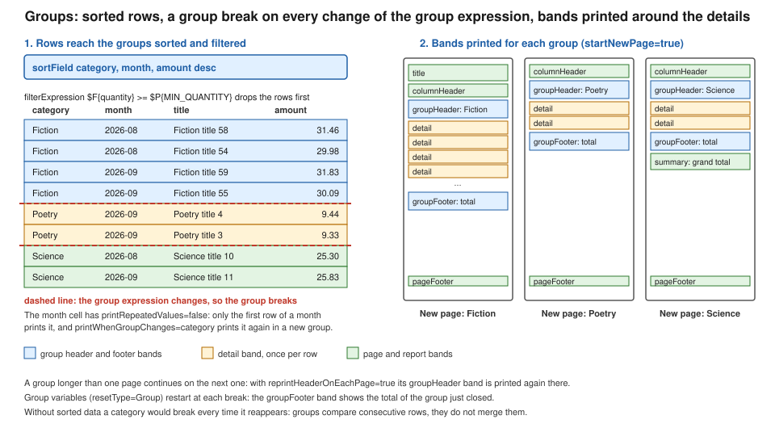

Groups, Sorting & Filtering
|
This content was generated with the assistance of AI and should be verified against the official documentation before being relied on in production. |
Baseline date: 2026-10-09. A flat list of rows is rarely what a reader wants from a report. The monthly sales report of the Bookshelf Billing service should show the sales of each category together, with a heading for the category, a subtotal at its end, and each category starting on its own page. JasperReports calls this a group: a named expression whose value is compared between consecutive rows, plus an optional header band and footer band that are printed whenever the value changes. This page covers the group element and its attributes, how to put the data in the order groups need (sorting), how to drop rows before they reach the report (filtering), how to avoid printing the same value on every line, and how to compute group totals with variables.
The examples use JasperReports 7.0.8 and the v7 JRXML syntax (namespace-free, with kind on each element), so they do
not load in 6.x, and the 6.x templates that books and older blog posts show do not load in 7.0. The structure of a
template and its bands is in
JRXML Report Design, the expression syntax in
Expressions, Parameters, Fields & Variables,
and the data sources in Data Sources & Query Executers.
The lifecycle (design, compile, fill, export) is in
JasperReports Architecture & Lifecycle.
The examples were compiled and run with Java 21 and JasperReports 7.0.8, and the resulting PDFs were read back to check the order, the filtering and the totals. Where this page states that something fails or behaves in a particular way, it comes from that run and says so.
How a group works
A group has a name, an expression, and up to two sections.
-
The group expression is evaluated for every row. When its value differs from the value for the previous row, a group break happens: the footer of the group that just ended is printed, then the header of the new one.
-
The group header and group footer are sections made of one or more bands. They are optional, and a group may have only one of them.
-
The rows in between are printed by the
detailband as usual.
The important consequence is that a group compares neighbouring rows. It does not collect all the rows with the same
value. If the same category shows up again later in the data, a new group starts, with another header, another
subtotal and, with startNewPage, another page. The data therefore has to arrive already ordered by the group
expressions, either through the report query or through sortField, as the official documentation states. With the
sample data used below (77 rows over three categories), a template without sorting rendered 4 pages when the rows
were already in category order and 25 pages when the same rows were shuffled, because almost every row started a new
group on a new page.
sorted and filtered rows
Fiction ... ---+
Fiction ... +-- group "category" = Fiction: groupHeader, detail rows, groupFooter
Fiction ... ---+
Poetry ... ---+-- value changes: break, a new groupHeader is printed
Science ...The figure shows the same thing with bands: rows go through a sort and a filter, every change of the group expression is a break, and each group prints its header, its details and its footer.

Groups can be nested. Groups are declared in the template from the outermost to the innermost, and when an outer group
breaks all the groups declared after it start again, so a category group followed by a month group prints each
month heading inside each category. Any number of groups can be declared, and each one has its own header, footer and
attributes.
Derived from the JasperReports sample: data grouping
(the jasper sample).
Group attributes
The group element has attributes that control paging. In the v7 JRXML they are written without the is prefix that the
version 6 syntax used for the boolean ones. The 6.x attribute names such as isStartNewPage that are quoted in older
books are rejected by the 7.0.8 parser (it fails with an unrecognised-field error pointing at the attribute), so a
template that is migrated by hand needs startNewPage, keepTogether and reprintHeaderOnEachPage. Opening the 6.x
file in Jaspersoft Studio 7 converts it.
| Attribute | Effect |
|---|---|
|
Identifier of the group, unique in the report. Variables and elements refer to it ( |
|
Starts a new page whenever a new group begins. Default |
|
Starts a new column whenever a new group begins, in a multi-column report. Default |
|
Resets the built-in |
|
When the rows of one group continue on the next page, prints the group header again at the top of that page. Default |
|
Minimum vertical space (in pixels) that must remain at the bottom of the page or column for a new group to start there. If less remains, the group starts on the next page. |
|
Prevents the group from being split on its first break attempt: if the group does not fit in what is left of the page, it moves to the next one. Default |
|
Where the group footer is rendered: |
|
Prevents the group footer from appearing at the top of a new page without any detail row before it. |
A few of these deserve more detail.
startNewPage is the simplest way to give each category its own page, which is what a printed sales report usually
wants. It is evaluated on every group break, including the first row of the report, so the first group does not leave
an empty first page (the title band is printed on the first page, and the group starts right after it).
keepTogether and minHeightToStartNewPage both avoid a group that starts at the bottom of a page with a heading
and one row, but they do it differently. minHeightToStartNewPage is a fixed amount of space in pixels: the group
starts on the new page whenever fewer pixels remain. keepTogether is based on the real size of the group, but only
for its first break attempt: a group that is longer than a whole page cannot be kept together and is split anyway. In
version 6 the attribute that stops a band from splitting was called isSplitAllowed, and in 7.0 it is splitType on
the band, which the JRXML Report Design page covers.
footerPosition matters when the footer of the last group should look like the bottom of a form, for example a
signature or terms area. StackAtBottom moves the footer to the bottom of the page and stacks the footers of the outer
groups below it; ForceAtBottom renders it at the very bottom of the page and forces whatever follows to the next page;
CollateAtBottom is a weak setting that only takes effect when all the outer group footers are also at the bottom.
The details of each value are in the JRGroup API documentation.
reprintHeaderOnEachPage is what makes a long group readable: with it, page 2 of a long category starts with the
category heading again. The column header band is separate and is printed on every page by default.
Derived from the JRGroup API
and the jasper sample.
The complete report
Maven coordinates for this and the following JasperReports pages are the ones from
Getting Started with Spring Boot; the artifacts
used here are jasperreports (the engine), jasperreports-pdf (the PDF exporter), jasperreports-fonts (DejaVu
fonts for containers without system fonts) and jasperreports-jdt (the Eclipse compiler used to compile the
expressions).
<properties>
<maven.compiler.release>21</maven.compiler.release>
<jasperreports.version>7.0.8</jasperreports.version>
</properties>
<dependencies>
<dependency>
<groupId>net.sf.jasperreports</groupId>
<artifactId>jasperreports</artifactId>
<version>${jasperreports.version}</version>
</dependency>
<dependency>
<groupId>net.sf.jasperreports</groupId>
<artifactId>jasperreports-pdf</artifactId>
<version>${jasperreports.version}</version>
</dependency>
<dependency>
<groupId>net.sf.jasperreports</groupId>
<artifactId>jasperreports-fonts</artifactId>
<version>${jasperreports.version}</version>
</dependency>
<dependency>
<groupId>net.sf.jasperreports</groupId>
<artifactId>jasperreports-jdt</artifactId>
<version>${jasperreports.version}</version>
</dependency>
</dependencies>The template below is src/main/resources/reports/sales-by-category.jrxml. It groups sales by category, sorts them,
filters out the rows below a minimum quantity, prints the month only when it changes, and totals each category and the
whole report.
<jasperReport name="sales-by-category" language="java" pageWidth="595" pageHeight="842"
columnWidth="515" leftMargin="40" rightMargin="40" topMargin="40" bottomMargin="40">
<parameter name="MIN_QUANTITY" class="java.lang.Integer"/>
<field name="category" class="java.lang.String"/>
<field name="month" class="java.lang.String"/>
<field name="title" class="java.lang.String"/>
<field name="quantity" class="java.lang.Integer"/>
<field name="amount" class="java.math.BigDecimal"/>
<sortField name="category"/>
<sortField name="month"/>
<sortField name="amount" order="Descending"/>
<filterExpression><![CDATA[$F{quantity} >= $P{MIN_QUANTITY}]]></filterExpression>
<variable name="categoryTotal" calculation="Sum" resetType="Group" resetGroup="category" class="java.math.BigDecimal">
<expression><![CDATA[$F{amount}]]></expression>
</variable>
<variable name="categoryCount" calculation="Count" resetType="Group" resetGroup="category" class="java.lang.Integer">
<expression><![CDATA[$F{title}]]></expression>
</variable>
<variable name="grandTotal" calculation="Sum" class="java.math.BigDecimal">
<expression><![CDATA[$F{amount}]]></expression>
</variable>
<group name="category" startNewPage="true" reprintHeaderOnEachPage="true" keepTogether="false"
minHeightToStartNewPage="60">
<expression><![CDATA[$F{category}]]></expression>
<groupHeader>
<band height="26">
<element kind="textField" x="0" y="2" width="515" height="22" bold="true" fontSize="13" backcolor="#E8EEF7" mode="Opaque">
<expression><![CDATA["Category: " + $F{category}]]></expression>
</element>
</band>
</groupHeader>
<groupFooter>
<band height="26">
<element kind="line" x="0" y="2" width="515" height="1"/>
<element kind="textField" x="0" y="4" width="300" height="20" bold="true">
<expression><![CDATA[$V{categoryCount} + " sales in " + $F{category}]]></expression>
</element>
<element kind="textField" x="365" y="4" width="150" height="20" bold="true" hTextAlign="Right" pattern="#,##0.00">
<expression><![CDATA[$V{categoryTotal}]]></expression>
</element>
</band>
</groupFooter>
</group>
<title height="40">
<element kind="staticText" x="0" y="0" width="515" height="30" fontSize="18" bold="true">
<text><![CDATA[Bookshelf sales by category]]></text>
</element>
</title>
<columnHeader height="20">
<element kind="staticText" x="0" y="0" width="60" height="18" bold="true"><text><![CDATA[Month]]></text></element>
<element kind="staticText" x="70" y="0" width="230" height="18" bold="true"><text><![CDATA[Title]]></text></element>
<element kind="staticText" x="300" y="0" width="60" height="18" bold="true" hTextAlign="Right"><text><![CDATA[Qty]]></text></element>
<element kind="staticText" x="365" y="0" width="150" height="18" bold="true" hTextAlign="Right"><text><![CDATA[Amount]]></text></element>
</columnHeader>
<detail>
<band height="18">
<element kind="textField" x="0" y="0" width="60" height="16" printRepeatedValues="false" printWhenGroupChanges="category">
<expression><![CDATA[$F{month}]]></expression>
</element>
<element kind="textField" x="70" y="0" width="230" height="16">
<expression><![CDATA[$F{title}]]></expression>
</element>
<element kind="textField" x="300" y="0" width="60" height="16" hTextAlign="Right">
<expression><![CDATA[$F{quantity}]]></expression>
</element>
<element kind="textField" x="365" y="0" width="150" height="16" hTextAlign="Right" pattern="#,##0.00">
<expression><![CDATA[$F{amount}]]></expression>
</element>
</band>
</detail>
<pageFooter height="20">
<element kind="textField" x="0" y="0" width="515" height="18" hTextAlign="Right">
<expression><![CDATA["Page " + $V{PAGE_NUMBER}]]></expression>
</element>
</pageFooter>
<summary height="30">
<element kind="textField" x="0" y="4" width="515" height="22" bold="true" hTextAlign="Right" pattern="#,##0.00">
<expression><![CDATA["Grand total: " + new java.text.DecimalFormat("#,##0.00").format($V{grandTotal})]]></expression>
</element>
</summary>
</jasperReport>In the v7 syntax title, columnHeader, pageFooter and summary hold their elements directly, while detail,
groupHeader and groupFooter hold band elements, because those three sections can contain several bands. Putting a
band inside title or pageFooter, which is the 6.x shape, does not match the v7 structure.
The Java side compiles the template once, fills it from a JRBeanCollectionDataSource and exports the PDF. The data
class is an ordinary bean with getters. A Java record does not work as a bean data source row in 7.0.8 (checked in
this run: the fill fails with "Error retrieving field value from bean"), because the engine looks for JavaBeans
getX() methods and a record only has x() accessors. Use a
class with getters, or a Map data source, and convert the records first.
package bookshelf;
import java.io.InputStream;
import java.math.BigDecimal;
import java.nio.file.Files;
import java.nio.file.Path;
import java.util.ArrayList;
import java.util.HashMap;
import java.util.List;
import java.util.Map;
import net.sf.jasperreports.engine.JRException;
import net.sf.jasperreports.engine.JasperCompileManager;
import net.sf.jasperreports.engine.JasperExportManager;
import net.sf.jasperreports.engine.JasperFillManager;
import net.sf.jasperreports.engine.JasperPrint;
import net.sf.jasperreports.engine.JasperReport;
import net.sf.jasperreports.engine.data.JRBeanCollectionDataSource;
public class SalesByCategory {
/** A plain bean: JRBeanCollectionDataSource reads JavaBeans getters (a record does not work). */
public static class Sale {
private final String category;
private final String month;
private final String title;
private final Integer quantity;
private final BigDecimal amount;
public Sale(String category, String month, String title, Integer quantity, BigDecimal amount) {
this.category = category;
this.month = month;
this.title = title;
this.quantity = quantity;
this.amount = amount;
}
public String getCategory() { return category; }
public String getMonth() { return month; }
public String getTitle() { return title; }
public Integer getQuantity() { return quantity; }
public BigDecimal getAmount() { return amount; }
}
static List<Sale> sampleSales() {
List<Sale> sales = new ArrayList<>();
String[] months = {"2026-08", "2026-09"};
for (int i = 0; i < 60; i++) {
sales.add(new Sale("Fiction", months[i % 2], "Fiction title " + i, i % 7 == 0 ? 0 : 1 + i % 3,
BigDecimal.valueOf(1000 + i * 37L, 2)));
}
for (int i = 0; i < 12; i++) {
sales.add(new Sale("Science", months[i % 2], "Science title " + i, 1 + i % 2,
BigDecimal.valueOf(2000 + i * 53L, 2)));
}
for (int i = 0; i < 5; i++) {
sales.add(new Sale("Poetry", "2026-09", "Poetry title " + i, 1, BigDecimal.valueOf(900 + i * 11L, 2)));
}
return sales;
}
public static byte[] render(JasperReport report, List<Sale> sales, int minQuantity) throws JRException {
// A mutable map: the engine adds its own entries to it while filling.
Map<String, Object> parameters = new HashMap<>();
parameters.put("MIN_QUANTITY", minQuantity);
JasperPrint print = JasperFillManager.fillReport(report, parameters, new JRBeanCollectionDataSource(sales));
return JasperExportManager.exportReportToPdf(print);
}
public static void main(String[] args) throws Exception {
JasperReport report;
try (InputStream jrxml = SalesByCategory.class.getResourceAsStream("/reports/sales-by-category.jrxml")) {
report = JasperCompileManager.compileReport(jrxml);
}
byte[] pdf = render(report, sampleSales(), 1);
Files.write(Path.of("sales-by-category.pdf"), pdf);
System.out.println("bytes=" + pdf.length);
}
}Running it produced a 4-page PDF. Reading its text back showed the three groups in alphabetical order (Fiction on
pages 1 and 2, Poetry on page 3, Science on page 4), each starting on a new page, the "Category: Fiction" heading
repeated at the top of page 2, the footer lines 51 sales in Fiction 1.071,66, 5 sales in Poetry 46,10 and
12 sales in Science 274,98 (decimal separators follow the default locale of the machine that ran it), and the grand
total on the last page. The Fiction group has 60 rows of which 9 have quantity 0, so the filter removed them and the
count is 51. An immutable Map.of(...) as the parameters map made fillReport throw UnsupportedOperationException
in the same run, so pass a HashMap. Derived from the
JasperReports data source sample and the
jasper sample.
Sorting
Groups need ordered data, and there are two places to order it.
The first is the query. For a report that runs an SQL query, ordering there is the fastest option because the database does the work and the engine can stream the rows:
SELECT category, to_char(sold_on, 'YYYY-MM') AS month, title, quantity, amount
FROM sale
ORDER BY category, month, amount DESCThe second is the sortField element, which orders the rows inside the engine, whichever data source they came from.
That is the only choice when the rows come from a Java collection, a JSON document or a CSV file, as in the example
above. A sortField is placed between the field and variable declarations and the groups, and takes the name of a
field and an optional order, Ascending (the default) or Descending. Several sortField elements sort by the
first one, then the second as a tie-breaker, and so on. Its type attribute can name a variable instead of a field
(type="Variable"), which the template compiled with in this run; it was not filled in that check, so verify the
result against your own data before relying on it.
The order of the sort fields must start with the group expressions, in the order the groups are declared, and then add
whatever order the details should have inside the last group. In the example the details are ordered by month and then
by amount descending, which is why the month cell can print only when its value changes. Because the engine must see
every row before it can output the first one in order, sorting inside the engine reads the whole data source first; for
a very large report prefer ORDER BY in the query, and see
Generating Reports from Databases & Services for ways to
feed the engine.
A group expression does not have to be a plain field: it can be any expression, and the official sample groups shipping data by the first letter of a name and then by country. The data must be ordered consistently with that expression, so expose the same value as a field or sort in the query. A mismatch between the group expression and the sort order is the usual cause of the "one page per row" result described earlier.
Derived from the jasper sample and the
datasource sample.
Filtering
A filterExpression is a Boolean expression evaluated for every row before the row reaches the groups, the variables
or the detail band. Rows for which it returns false are skipped entirely: they are not counted, not summed and not
printed. In the example, $F{quantity} >= $P{MIN_QUANTITY} takes a parameter, so the same compiled template serves
"all sales", with a minimum of 0, and "sales of at least one copy", with a minimum of 1, which is what the run above
used.
Two practical points follow. First, filtering is done on rows, after the query has delivered them, so when the data
comes from SQL a WHERE clause that reaches the database is cheaper than a filterExpression; the expression is
the right tool for rules the query cannot express and for data sources that have no query, such as a collection or a
JSON file. Second, filtering by the expression is global to the report. To hide a single element conditionally use the
element’s own printWhenExpression, and to show an alternative layout when nothing survives the filter use the
noData band described in the JRXML Report Design page.
Derived from the datasource sample
and the JasperDesign API.
Not repeating values
In a grouped detail it is common that one column has the same value on many consecutive rows: the month, the author, the
customer. Printing it once and leaving the following cells blank makes the report readable. The element attribute
printRepeatedValues="false" does that: the element is printed only when its value differs from the one printed on the
previous row. In the example, the month appears once per month, so rows are grouped visually even though the month
column is a plain field and not a group.
With only printRepeatedValues="false", the first row of a new page or of a new category can be left without its month
when the value happens to equal the previous one. Two further attributes decide when the element is printed again (both
compiled with 7.0.8):
-
printWhenGroupChanges="category"prints the element again whenever the named group breaks. The example uses it so that each category starts with its month. -
printInFirstWholeBand="true"prints the element again in the first whole band of every page or column.
The complementary tool is an element-level printWhenExpression, which is a Boolean expression that decides whether a
single element is printed at all and is evaluated for every row.
Derived from the jasper sample and the
JRElement API.
Group totals
A group total is a variable that is reset when the group breaks. The variable declares a calculation (Sum,
Count, Average, Lowest, Highest, and so on), an expression, and resetType="Group" with resetGroup naming the
group. The engine adds the expression value of each row to the variable, and when the group breaks it prints the
footer, and only then resets the variable. This order is why the footer shows the total of the group that just ended and
the next group’s header does not: the footer belongs to the old group, and the reset happens before the new header.
-
categoryTotalsums the amount for the current category and is shown in the group footer. -
categoryCountcounts rows in the category. The official sample also uses a variable named after the group with the suffix_COUNT($V{category_COUNT}here), which the engine provides for every group, so for a plain count there is no need to declare one. ReplacingcategoryCountwith it compiled, filled and exported with 7.0.8; the explicit version is kept above to show the pattern. -
grandTotalhas no reset (defaultresetType="Report"), so it sums the whole report and is shown in thesummaryband.
Footers have a second use: the percentage of the report a group represents. The official sample does this with an
expression that divides the group sum by the report sum. When a header needs a value that is only known at the end of
its group, for example the number of pages the group used or its total, the text field can be evaluated late: the
jasper sample sets evaluationTime="Group" and evaluationGroup on a header element, so the value is computed when
the group ends and then placed in the header printed earlier. That is the same mechanism as "page X of Y" with
evaluationTime="Report", covered in the expressions page.
<element kind="textField" x="365" y="2" width="150" height="20" hTextAlign="Right"
evaluationTime="Group" evaluationGroup="category" pattern="#,##0.00">
<expression><![CDATA[$V{categoryTotal}]]></expression>
</element>Placed in the groupHeader band of the example, that element shows the category total next to the category name even
though the total is not known when the header is printed. This fragment is derived from the sample and was not
filled as a separate run.
Derived from the jasper sample and the
JRVariable API.
Nested groups
A second group declared after the first is nested inside it. The fragment below adds a month group inside category
that prints a month heading whenever the month changes, replacing the repeated-value trick for a more visual layout. It
has to be declared after the category group, and its sort field must come after the category’s. The attributes and the nested group compiled with JasperReports 7.0.8, together with keepTogether="true",
footerPosition="StackAtBottom", preventOrphanFooter="true" and a type="Variable" sort field on the other group,
and the parsed group reported those values back.
<group name="month">
<expression><![CDATA[$F{month}]]></expression>
<groupHeader>
<band height="18">
<element kind="textField" x="0" y="0" width="515" height="16" italic="true">
<expression><![CDATA["Month " + $F{month}]]></expression>
</element>
</band>
</groupHeader>
</group>When the category changes, the month group also breaks, because the outer group’s break reinitialises the inner
ones, so every category starts with a month heading even if the month value happens to be the same as the last row of
the previous category.
Derived from the jasper sample.
Choosing between query grouping and report groups
The official documentation names two ways to group. A query can do the aggregation itself with GROUP BY and
aggregate functions, and the report then prints the already aggregated rows. The sample documentation lists the advantage as
speed, because the engine has less to prepare, and the disadvantage as the loss of nested groups with header and footer
bands, so only simplified layouts are possible. Report groups let the template show the details and the aggregates in
one layout, at the cost of the engine iterating over all the rows. For a sales report grouped by category with a subtotal
under the titles, report groups are the right tool; for a summary table of one total per category, the query is
enough and the template can be a plain detail band.
The older books on JasperReports cover groups, sorting and filtering in the DTD-era syntax of the 1.x to 3.x versions,
with the 6.x attribute names (isStartNewPage, isReprintHeaderOnEachPage) and <group> elements that contain
bands directly. The concepts survived unchanged, but the file format did not (the 7.0 parser is Jackson-based and
rejects the old spelling, as described above), and the examples in this page are written from the official
documentation and checked against 7.0.8 rather than adapted from those books.
References
-
JRXML Report Design on this site
-
Expressions, Parameters, Fields & Variables on this site
-
Data Sources & Query Executers on this site
-
Generating Reports from Databases & Services on this site